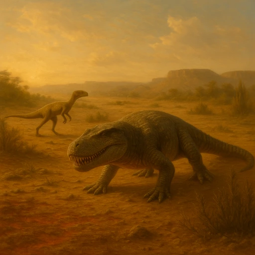

Período Triásico
Tras la gran extinción del Pérmico, la vida se recupera. Aparecen los primeros dinosaurios y mamíferos primitivos en un supercontinente llamado Pangea.
La Era Mesozoica se extiende aproximadamente entre 252 y 66 millones de años atrás. Es conocida como la “era de los dinosaurios”, pero también fue un periodo de cambios en los continentes, en el clima y en la vida vegetal y marina, que preparó el escenario para la Era Cenozoica.
Tras la gran extinción del Pérmico, la vida se recupera. Aparecen los primeros dinosaurios y mamíferos primitivos en un supercontinente llamado Pangea.
Los dinosaurios se diversifican y ocupan muchos ambientes. Los mares están llenos de reptiles marinos y los cielos de los primeros pterosaurios.

Se expanden las plantas con flores y continúan diversificándose los dinosaurios, hasta la gran extinción que marca el fin de la Era Mesozoica.